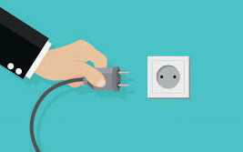

TEMATIKA 4: NJOHJA E RREZIQEVE1. Ki kujdes, Dielli!
Puno në klasë
Ndihmë: si të punoj?
Shkruaj përgjigjen tënde. Mund ta thuash edhe me zë ose t’ia tregosh dikujt që shkruan për ty. Kur të mbarosh, shtyp butonin “Dërgo”.
1.
Shiko figurat. Identifiko rreziqet e mundshme dhe trego se çfarë masash duhen marrë.
